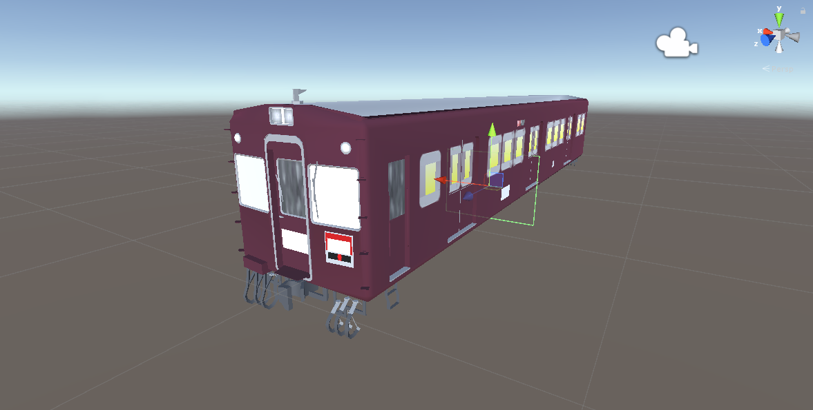
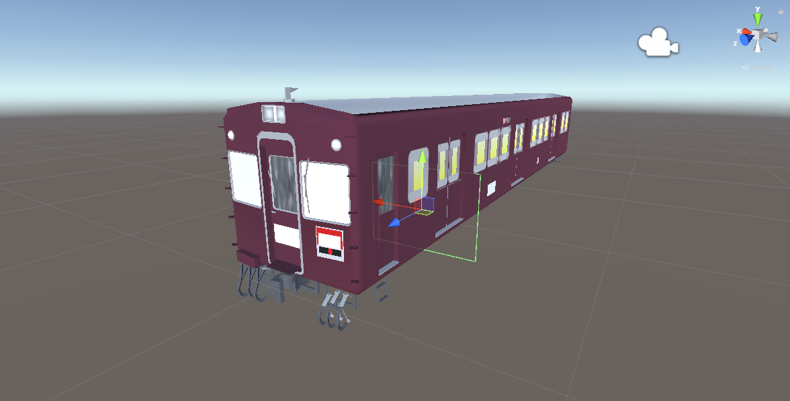
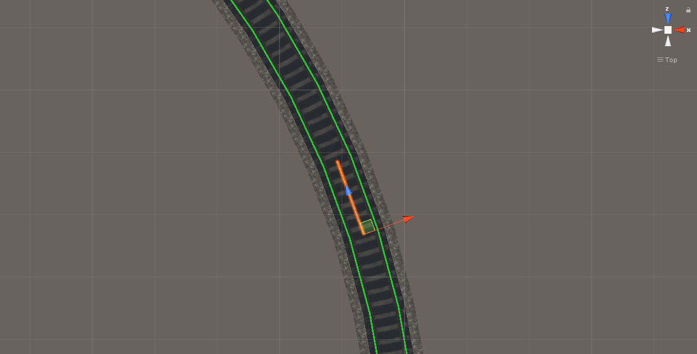
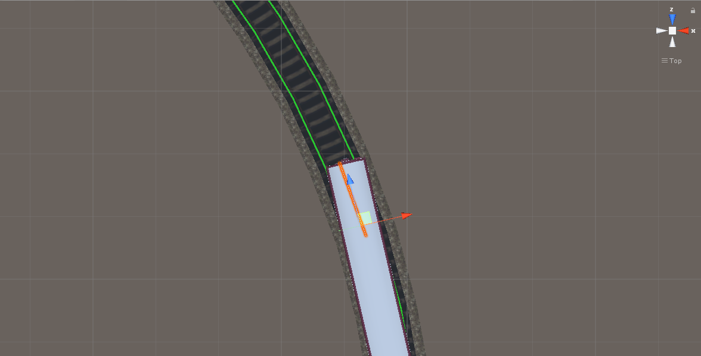
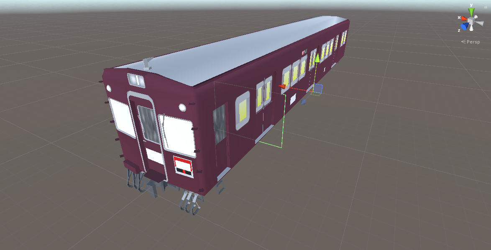
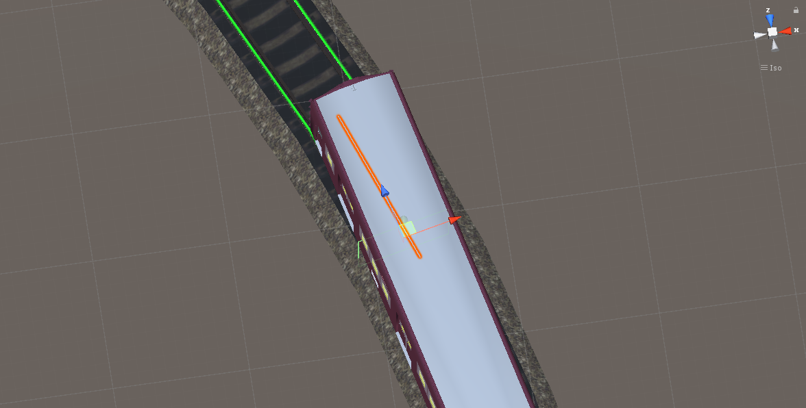
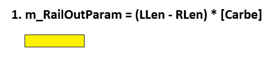
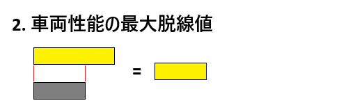
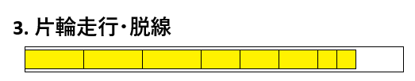

SSの片輪走行・脱線の仕様書
1. BoxColliderの移動

片輪走行はBoxCollider、現在のスピード、レールを使って判断する。
モデルによってそれぞれ違うが、阪急2000系の場合
図のようにサイズが（7, 5, 0）の平面のBoxColliderを
モデルの中心に配置している。
そして、このBoxColliderは速度が増えるとZ方向へ進むようになっており
下記の式でZ点を決定する。
add_pos = m_TrainOrg_Add * m_PrivateSpeedPer * now_speed_per * FPS値(60FPSの場合、およそ1.0)
z = add_pos * [車両性能の脱線設定の係数]
※m_PrivateSpeedPerは、普段はおよそ「1.0」の値。クラッシュや自走不能が起きた際に変化する。
※変数の詳細は、
加速の仕様書に書かれている。
つまり、160キロで走っていると
add_pos = 2.96 * 1.0 * 1.01 * 1.0 = 2.9896
z = 2.9896 * 2.9 = 8.66984

図のように、Z方向へ進む。
2. 現在レールから次のレールまでの「ライン」を定義
次に、1号車の一番前の台車の位置、
「現在レール」のボーン位置と、「次のレール」のボーン位置を探す。

つまり、もし現在レールが4番目のボーンにある場合
このような直線を描いて

Z方向へ移動したBoxColliderとヒットしているか判断する。
もし、ヒットしていない場合
1. 速度が遅すぎて、片輪走行しない
2. 脱線係数が低い
という意味である。
3. ヒットした点と「ColL」、「ColR」の距離測定
ヒットしている場合、次はどれほど曲がっているか判断する。
レールデータ上「dir_y」が０の場合、続きの処理を行わずに終了する。
つまり、当然の話だけど、直線のレールでは片輪走行しない。

直線ではない場合、図のように事前に定義された位置
「ColR」と「ColL」のそれぞれの位置から、ヒットしている点までの距離を測定する。
図は「ColL」の位置であり、阪急2000系の場合
「ColL」は（-3.5, 0, 0）、
「ColR」は（3.5, 0, 0）の位置と定義している。

曲がっている場合、ヒットする点は
BoxColliderの中心位置からちょっとずれる。
このヒット位置から、それぞれの「ColL」、「ColR」の距離を測定すると
図の場合、「ColL」の方が距離が長い。
これを元に、下記の式を計算する。
LLen = 「ColL」とヒットした点までの距離
RLen = 「ColR」とヒットした点までの距離
m_RailOutParam = (LLen - RLen) * [Carbe]
結果値の「m_RailOutParam」は、
1フレーム分、あるレールでの「瞬間脱線値」である。
4. m_RailOutParamの補正①（カント、振り子）
あるレールの角度Z（Rotate Z）の値が０ではない場合、補正が行われる。
ただし、Z値が-180より低い場合、360を加えた値。
180より高い場合、360を引いた値を使う。
整理すると、(-180~180)の範囲で変換した角度Zの値を使う。
使うZの値は、現在レールの一番最初に踏んだボーンの「Zの値」を使う。
つまり、正方向の場合は、あるレールの1番目のボーン
逆方向の場合は、あるレールの最後のボーンの「Zの値」を使う。
取得したZの値で、下記のように補正する
※振り子の数は、左側に曲げると「-1」ずつ、右側に曲げると「+1」ずつ増える
1. m_RailOutParamの値が(-0.01 ~ 0.01)の場合は補正を行わない。
正方向基準、m_RailOutParamの値が-0.01より小さい場合は、2番の処理
m_RailOutParamの値が0.01より大きい場合、3番の処理を実施する。
2-1. 左側に傾く場合
m_RailOutParam = m_RailOutParam + (Zの値 * [カントの係数])
2-2. もし、振り子車両で、振り子状態の場合
m_RailOutParam = m_RailOutParam + ([曲げた振り子の数] * [振り子角度])
2-3. 最終的に補正したm_RailOutParamの値が、0より大きい場合、0で処理する
3-1. 右側に傾く場合
m_RailOutParam = m_RailOutParam + (Zの値 * [カントの係数])
3-2. もし、振り子車両で、振り子状態の場合
m_RailOutParam = m_RailOutParam + ([曲げた振り子の数] * [振り子角度])
3-3. 最終的に補正したm_RailOutParamの値が、0より小さい場合、0で処理する
もし、逆方向の場合は、処理の順番が「2番→3番」に、「3番→2番」になる。
5. m_RailOutParamの補正②（ドリフト）
もし、今ドリフト中なら、下記のように補正する
m_RailOutParam = m_RailOutParam * 0.05
この処理のおかげで、ドリフト中はほぼ脱線しない。
6. m_RailOutParamの補正③（ブレーキ、最大脱線値）
もし、ブレーキを入れた場合、下記のように補正する
m_RailOutParam = m_RailOutParam * [車両性能のブレーキ時、脱線値上昇を軽減]
最終的に「m_RailOutParam」の絶対値が、[車両性能の最大脱線値]を超える場合は
m_RailOutParamは、[車両性能の最大脱線値]として処理する。
7. 片輪走行するための式
次の変数を使って、片輪走行をするか判断する。
NowOutRun = [車両性能のOutParam] * m_DriftAddPer * m_Drift2Per
※変数の詳細は、
加速の仕様書を参照
FitPer = 普段は「1.0」で定義。コミックスクリプト「FIT_PER」によって変化する。
m_OutParam = m_OutParam + (m_RailOutParam * GameSpeed)
※GameSpeedは普段は「1.0」で定義。コミックスクリプト「CHANGE_SPEED」によって変化する
m_OutPer = m_OutParam * FitPer / NowOutRun
この時、m_OutPerが0.25より大きい場合、右側に片輪走行し始め
-0.25より小さい場合、左側に片輪走行し始める
また、コミックスクリプトのイベントなどによって、ゲーム速度が遅くなる場合、
瞬間脱線値が低くなり、ある程度脱線を抑える効果がある。
8. 脱線するための式
上記の式によって、瞬間脱線値の「m_RailOutParam」が蓄積された「m_OutParam」の絶対値が、
NowOutRun以上になった瞬間、脱線する。
整理
ここまで読んでくれてお疲れ様。
図で整理すると

計算した、瞬間脱線値を求め
（※カント、振り子などで補正され）

この瞬間脱線値は、[車両性能の最大脱線値]により補正され

この値が蓄積されて、ゲージの0.25より大きくなると、片輪走行し始め
ゲージがMaxになると脱線する。
表で整理すると、このような関係になる。
| 性能名 |
デフォルト値から小さくする |
デフォルト値から大きくする |
| Carbe |
瞬間脱線値が小さくなる |
瞬間脱線値が大きくなる |
| OutParam |
ゲージが小さくなったため、ほぼ即脱線する |
ゲージが大きくなったため、中々脱線しない |
TrackOutPer
（脱線係数） |
ヒットさせるBoxColliderが中々Z軸へ進まない
→高い速度でも中々片輪走行しない |
ヒットさせるBoxColliderが容易くZ軸へ進む
→低い速度でもすぐ片輪走行し始める |
TrackKntPer
（カントの係数） |
カントの影響があまりないため、
瞬間脱線値が少しだけ小さくなる |
カントの影響が大きくなったため、
瞬間脱線値がかなり小さくなる |
Breake_Out_Pow
（ブレーキ時、脱線値上昇を軽減） |
瞬間脱線値がかなり軽減される。 |
・1以下の場合、瞬間脱線値があまり軽減されない。
・1以上の場合、むしろ上昇する |
MaxOutParam
（1フレーム最大脱線値） |
蓄積される最大脱線値が小さくなる
→中々脱線しない |
蓄積される最大脱線値が大きくなる
→脱線しなかったところも脱線する可能性がある |